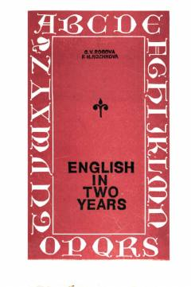

EI10-11-sinflar uchun ingliz tili darsligi va o'quv qo'llanmasi.
Ushbu o'quv qo'llanma o'rta maktabning 10-11-sinf o'quvchilari uchun mo'ljallangan bo'lib, ingliz tilini ikki yil davomida mukammal o'rganishga yordam beradi. Kitob og'zaki nutq ko'nikmalarini rivojlantirish, ingliz tilida tushunish, o'qish va yozish malakalarini shakllantirish uchun maxsus mashqlar va matnlarni o'z ichiga oladi.